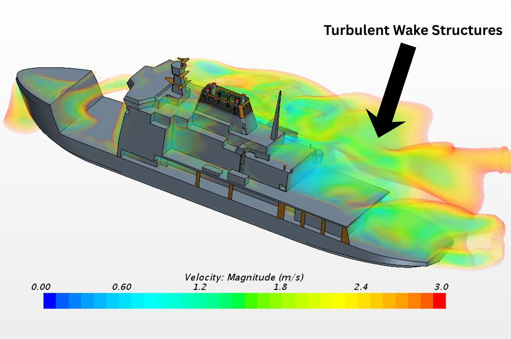

Why This Matters
Landing a UAV on a moving ship deck is one of the most demanding autonomous control problems in robotics. The ship's superstructure creates a turbulent wake, vortices, flow separation, and highly unsteady pressure fields that directly destabilize the vehicle during final approach. Controllers need accurate disturbance models to compensate, but real-world ship-wake data is extraordinarily difficult and expensive to obtain.
My research has two parts: generating high-fidelity CFD simulations of ship wake flow fields, and reducing those simulations to compact, computationally efficient models that can actually be used in a real-time control system.

CFD Simulation Pipeline
The simulation environment is built entirely in OpenFOAM, an open-source finite volume solver. The ship geometry is imported as an STL surface mesh, and the fluid domain is constructed and refined around it.
The Problem with Raw CFD
Why raw CFD can't feed a real-time controller
Each simulation exports the full 3D velocity field at every timestep, roughly 100 timesteps × 3 velocity components × roughly 1,000,000 spatial points. That's a 300-million-element dataset per run. Even storing it efficiently is non-trivial, and using it directly for control system input is completely impractical.
Real-time autonomous control requires disturbance models that evaluate in microseconds to milliseconds, not the hours or days a full CFD solve takes. The solution is to extract the essential physics from the high-dimensional data and represent it in a compact form without throwing away the accuracy that makes the simulation useful.
Proper Orthogonal Decomposition (POD)
The mathematical tool I use for this dimensionality reduction is Proper Orthogonal Decomposition (POD), a data-driven technique from linear algebra that decomposes the flow field into a hierarchy of orthogonal spatial modes, ranked by energy content.
Conceptually, POD answers the question: what are the most energetically important spatial structures in this flow? The first few modes capture the dominant physics, and the rest can often be discarded with minimal loss of fidelity.
Where ū(x) is the mean flow field, φk(x) are the spatial modes (orthogonal basis functions), and ak(t) are the temporal coefficients that describe how each mode evolves in time. The modes are computed via Singular Value Decomposition (SVD) of the snapshot matrix.
In practice, the first handful of modes typically capture >95% of the total flow energy, reducing the representation from millions of spatial points to just a few dozen temporal coefficients, a compression ratio of several orders of magnitude.
POD Verification: Reynolds Number Scaling
A critical check on the method's physical validity: as wind speed increases, the Reynolds number increases, turbulence intensifies, and the flow becomes less ordered, meaning more modes should be needed to represent it accurately.
I verified this by running POD at multiple wind speeds and examining whether the number of energetically significant modes increased with Reynolds number. The results confirmed the expected behavior: higher Reynolds number flows required more modes, consistent with the physical understanding that turbulent flows contain energy across a broader range of spatial scales.
Future Work
Research Takeaways
- High-fidelity CFD and real-time control aren't mutually exclusive. ROM bridges the gap.
- POD reveals the dominant physics of complex flows through linear algebra, without needing to guess upfront which structures matter
- Verifying POD results against known physical scaling (Reynolds number to mode count) builds confidence that the decomposition is capturing real fluid behavior
- Automated Python post-processing pipelines are essential when working with datasets of millions of spatial points across hundreds of timesteps